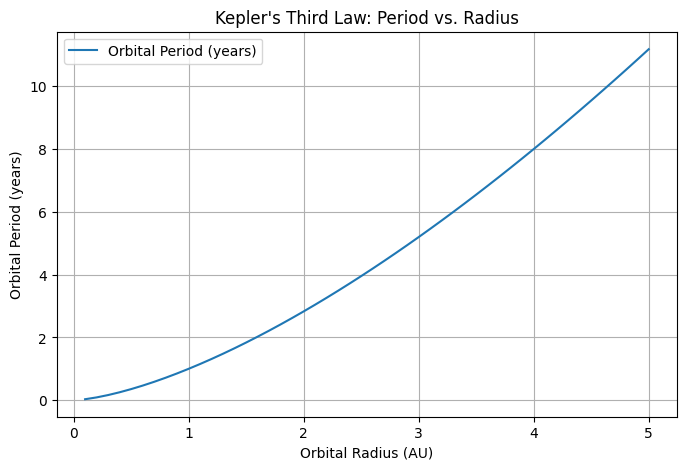
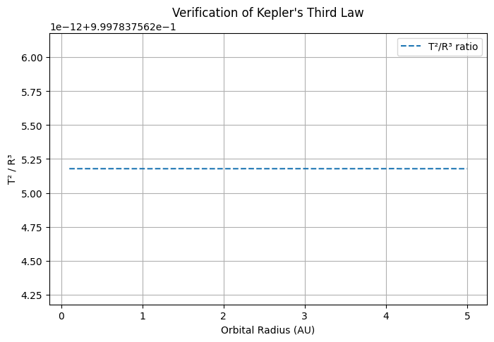
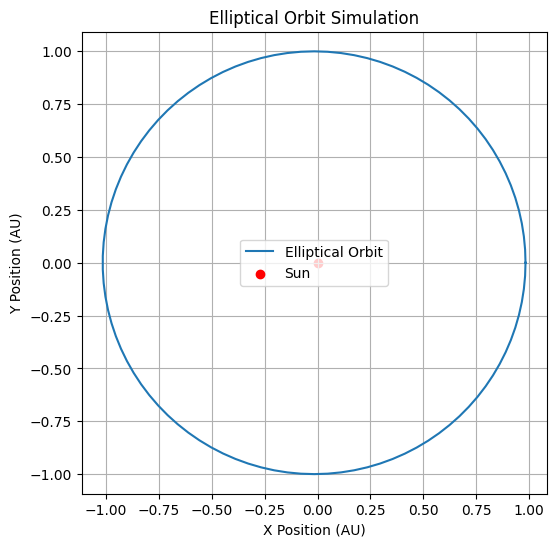

Problem 1
Kepler's Third Law and Orbital Motion Analysis
Introduction
Kepler's Third Law states that the square of a planet's orbital period is proportional to the cube of its semi-major axis:
where: - T is the orbital period, - R is the semi-major axis (for circular orbits, the orbital radius), - The proportionality constant depends on the mass of the central body.
This relationship provides crucial insights into planetary motion, helping astronomers determine distances and masses of celestial bodies.

1. Understanding Kepler’s Third Law in Circular Orbits
For a circular orbit, the gravitational force provides the necessary centripetal force:
where: - G is the gravitational constant $$ 6.674 \times 10^{-11} \, m^3 kg^{-1} s^{-2}\ $$ - \(M\) is the mass of the central body (e.g., the Sun), - \(m\) is the mass of the orbiting body, - \(R\) is the orbital radius, - \(v\) is the orbital velocity.
Since velocity is related to the period by $$ v = \frac{2 \pi R}{T} $$, substituting into the equation above gives:
This confirms the proportionality \(\(T^2 \propto R^3\)\)

2. Computational Implementation for Circular Orbits
Code Breakdown
- The function
orbital_period(radius, mass_center)calculates the orbital period using Kepler’s Third Law. - We define a range of orbital radii (from 0.1 to 5 AU).
- Using the function, we compute the corresponding orbital periods.
- We verify the relationship $$T^2 / R^3 $$ remains constant.
Graphical Representation
- Orbital Period vs. Orbital Radius: The first plot shows the dependence of orbital period on radius.
- Kepler’s Verification Plot: The second plot confirms that \(\(T^2 / R^3\)\) is approximately constant.
3. Extending to Elliptical Orbits
Elliptical Motion
Kepler's First Law states that planetary orbits are elliptical, with the Sun at one focus. The equation for an elliptical orbit is:
where: - a is the semi-major axis, - e$ is the eccentricity (0 for a perfect circle, close to 1 for a highly elliptical orbit), - \((\theta)\) is the true anomaly (angle in the orbital plane).
Elliptical Orbit Simulation
- The function
elliptical_orbit(a, e)calculates the positions of an orbiting body. - We simulate Earth's orbit with \( a = 1 \) AU and \( e = 0.0167 \).
- The final plot visually represents an elliptical orbit.

4. Applications and Implications
- Planetary Masses: By measuring orbital periods and radii, astronomers estimate the masses of planets and stars.
- Satellite Orbits: Kepler's Laws help design satellite trajectories around Earth.
- Exoplanet Discovery: Observing periodic brightness dips in distant stars (due to orbiting planets) provides exoplanet data.